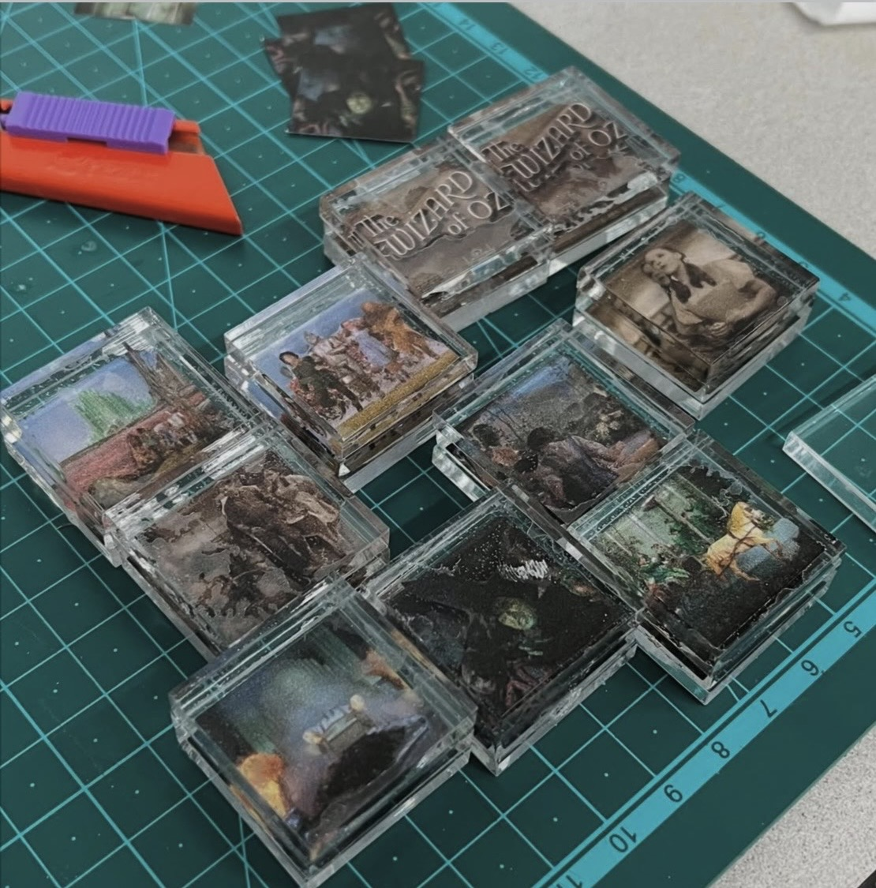

Frame by FrameFrame by Frame
관람 경험을 함께 만드는 경험으로 재해석한 인터랙티브 시네마 설치 작품입니다. NFC 기반 아크릴 프레임을 통해 관람객들은 각자 기억하는 장면으로 영화의 상징적인 한 씬을 함께 완성합니다. An interactive cinema installation that reimagines movie-going as a collective experience. Through NFC-enabled acrylic frames, audiences collaboratively reconstruct an iconic film scene from their own favorite memories.
배경Background
스크린 너머의 영화관 경험을 다시 상상하다
Reimagining the cinema experience beyond the screen
스트리밍 플랫폼이 보편화되면서 영화관은 관객 감소를 겪고 있습니다. 이 프로젝트는 '물리적인 영화관만이 줄 수 있는 고유한 가치는 무엇일까?'라는 질문에서 시작해, 관객이 직접 참여하고 기억을 나누는 공간으로 영화관을 재해석하고자 했습니다.
With streaming platforms becoming mainstream, cinemas are facing declining attendance. This project began with a question, what unique value can only a physical cinema provide, and reimagines the cinema as a space where audiences actively participate and share memories together.
아이디어Idea
각자의 기억이 모여, 하나의 장면이 되다.
Countless individual memories, one shared scene.
한 편의 영화는 수많은 프레임으로 이루어져 있고, 같은 영화를 보고도 사람마다 기억하는 순간은 다릅니다. 각자 가장 인상 깊었던 프레임을 하나씩 내놓는다면, 그것들이 모여 상징적인 한 장면을 완성할 수 있지 않을까? 관람객은 개인적인 기억만 안고 돌아가는 대신, 함께 만든 공동의 작품 일부가 됩니다.
A film is made up of countless frames, and after watching a movie, everyone remembers different moments. What if each audience member contributed their most memorable frame, together reconstructing one iconic scene? Instead of leaving with only a personal memory, visitors become part of a collaborative artwork.
영감Inspiration
흑백에서 컬러로, 오즈의 마법사
From black and white to color, the Wizard of Oz
이 프로젝트는 흑백에서 테크니컬러로 전환되는 장면으로 유명한 <오즈의 마법사>에서 영감을 받았습니다. 이 설치 작품도 마찬가지로, 조각난 개인의 기억들을 하나의 선명한 집단 이미지로 전환하며 영화를 함께 나누는 경험으로 기념합니다.
The project was inspired by The Wizard of Oz, famous for its transition from black-and-white to Technicolor. Similarly, the installation transforms fragmented individual memories into one vivid collective image, celebrating cinema as a shared experience.
재료가 곧 메시지다The Material Is the Message
재료는 아크릴로 정했다. 투명한 소재라 조명을 통과시키며 각자의 프레임이 서로 다른 기억이라는 걸 드러냈고, 여러 장이 겹쳐야 선명해지는 방식이 '조각난 기억이 모여 하나의 장면이 된다'는 아이디어와 맞아떨어졌다. 전경과 배경을 여러 겹으로 나눠 쌓아, 조명이 켜지면 실제 필름 프레임처럼 층층이 쌓인 이미지가 만들어지도록 했다.
Acrylic became the material of choice. Being transparent, it let light pass through while making clear each frame held a different memory, and the way several sheets sharpened only once stacked together matched the idea of fragmented memories coming together into one scene. Splitting the foreground and background across multiple layers meant that once lit, the image built up the way a film is actually built up, frame by frame.


01
인터랙션 프로토타이핑Interaction Prototyping
실제 제작에 들어가기 전, 종이 프로토타입으로 편안한 인터랙션 각도와 제스처를 탐구했습니다.
Explored comfortable interaction angles and gestures using paper prototypes before moving into production.


02
아크릴 프레임 제작Acrylic Frame Fabrication
프레임 조각들을 3D로 디자인하고, 원하는 물리적 형태를 구현하기 위해 투명 아크릴을 레이저 커팅했습니다.
Designed the frame pieces in 3D and laser-cut transparent acrylic to achieve the desired physical form.



03
레이어드 비주얼 구성Layered Visual Construction
전경 캐릭터와 배경 요소를 여러 겹의 아크릴 레이어로 분리해, 조명이 켜졌을 때 깊이감과 입체적인 비주얼 효과를 만들어냈습니다.
Separated foreground characters and background elements into multiple acrylic layers, creating depth and a three-dimensional visual effect when illuminated.
인터랙션Interaction
01
기억 선택하기Choose a Memory
영화 관람 후, 관람객은 가장 인상 깊었던 장면을 선택합니다.
After watching the film, visitors select the scene that left the strongest impression.
02
프레임 스캔하기Scan the Frame
선택한 아크릴 프레임을 NFC가 내장된 유리 인터페이스에 가져다 댑니다.
The selected acrylic frame is placed against an NFC-enabled glass interface.
03
장면 나타내기Reveal the Scene
해당하는 영화 장면이 큰 화면 위에 나타납니다.
The corresponding movie frame appears on the large display.
04
공동 작품 완성하기Complete the Collective Artwork
더 많은 관람객이 참여할수록, 개별 프레임들이 점차 모여 하나의 상징적인 영화 장면을 완성하며 관객들이 공유한 기억을 시각화합니다.
As more visitors participate, individual frames gradually come together to reconstruct one iconic cinematic scene, visualizing the audience's shared memories.
HCI 학회 시연Demonstration in HCI conference
이 프로젝트는 HCI Korea 2025의 크리에이티브 어워즈 전시에 선정되어, 학회 참석자들을 대상으로 인터랙티브 데모로 소개되었습니다.
The project was selected for the Creative Awards exhibition at HCI Korea 2025, where it was presented as an interactive demo to conference attendees.